Offline · Local · Free
喵创说
面向百万字长篇创作的离线工作站
10MB
安装包
80%
内存降低
60fps
百万字流畅
0
云端依赖
100%
数据主权
01 · 创意介绍
Creative Introduction
想解决什么问题
长篇创作是一个系统性工程, 涉及剧情线推进、人物关系维护、世界观设定管理等多个维度。喵创说希望为有写作兴趣与意向的用户提供尝试的机会, 帮助他们迈出写作第一步。通过将编辑、剧情、人物、设定四大模块集成于单一工作站, 让创作者在一个界面内即可完成完整的长篇叙事工作流, 专注于故事本身。
为什么会想到做这个
喵创说的诞生初衷很简单——希望降低长篇创作的工具门槛, 让更多有故事的人能够拿起键盘开始创作。我们希望提供一个完全本地化、零门槛、专为长篇叙事工作流设计的桌面工作站, 让创作者无需在多个软件之间切换, 在一个专注的环境中完成从灵感迸发到成稿的全流程, 让创作回归专注本身。
产品形态
喵创说是一款基于 Tauri 2.0 + React 18 + Rust 构建的 Windows 桌面端离线长篇创作工作站, 安装包 10MB 以内, 完全本地运行, 无需账号登录, 数据 100% 存储于本地。
02 · 目标用户及需求
Users & Solution
用户需求
- 一站式完成长篇创作全部环节, 减少多软件切换消耗
- 创作内容完全存储于本地, 数据主权归创作者
- 提供剧情线、人物关系等长篇专属能力
- 完全免费, 降低长篇创作门槛, 服务更多创作者
- 百万字长文档保持流畅滚动与编辑体验
- 轻量化安装包, 减少系统资源占用
喵创说的解法
- 编辑、剧情、人物、设定四大模块集成于单一工作站
- 所有数据以 TXT / JSON 存于本地, 主权归创作者
- 内置剧情时间线、人物关系图、设定库
- 免费提供, 服务独立与业余创作者群体
- Tauri + Rust 后端, 前端保持 60fps
- 安装包 10MB 内, 轻量化部署, 减少系统资源占用
03 · 界面预览
15 screenshots · click to zoom
主界面与项目管理
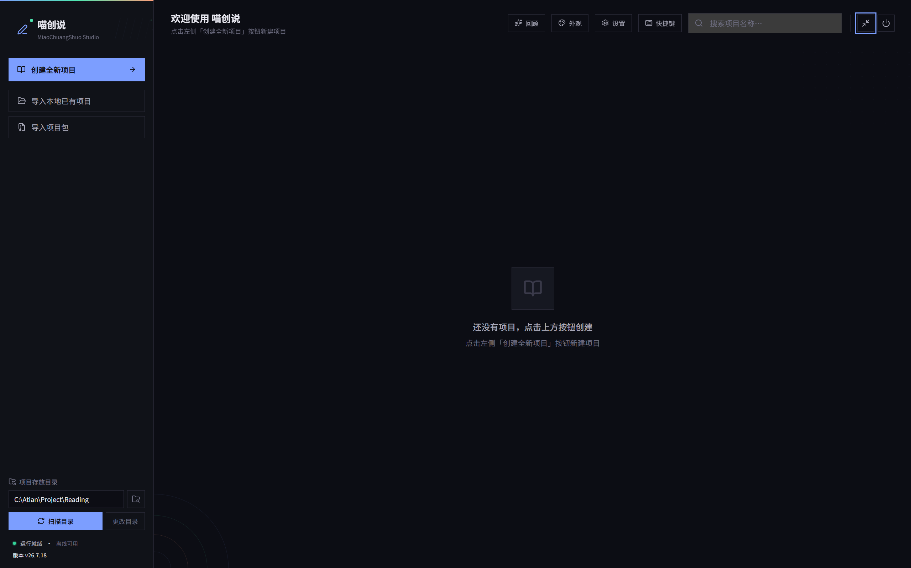
主页示例
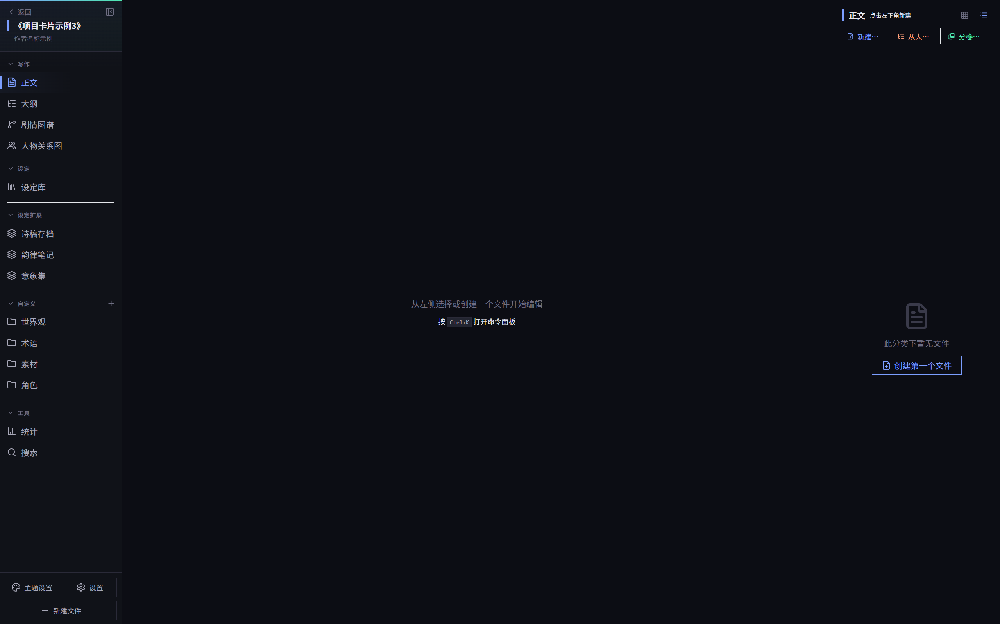
项目页面示例
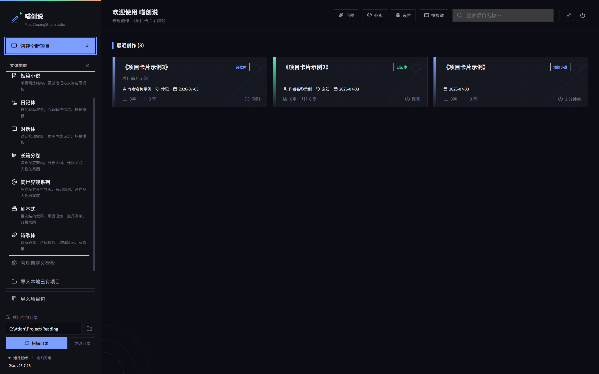
项目卡片示例
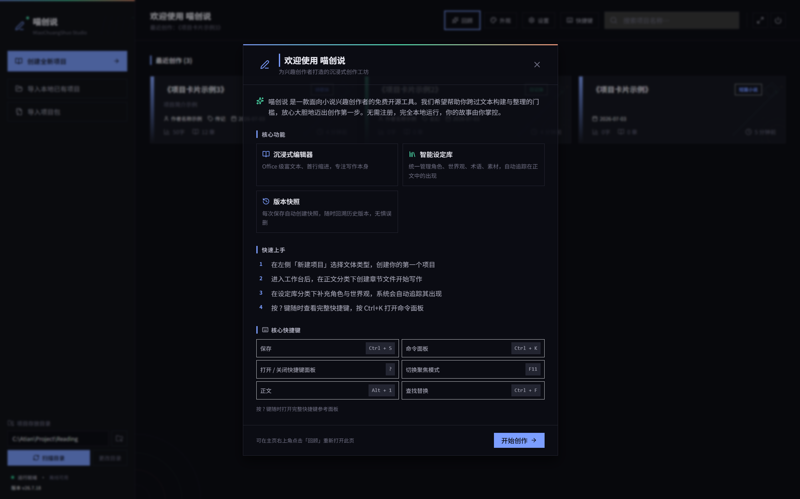
软件介绍页示例
创作工作台
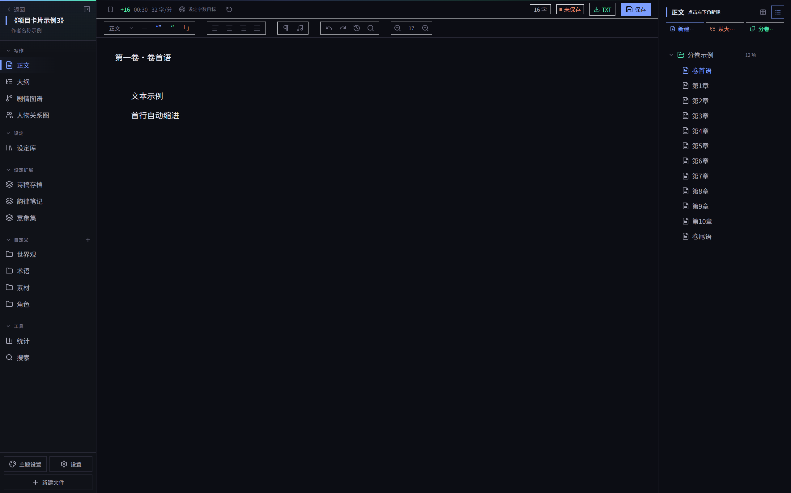
创作页示例
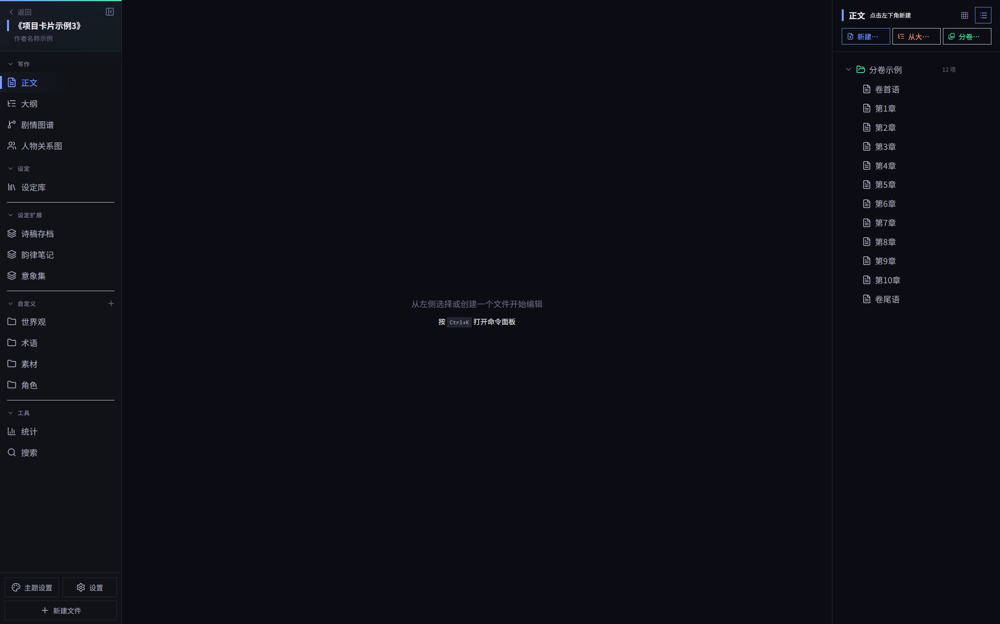
创作界面示例
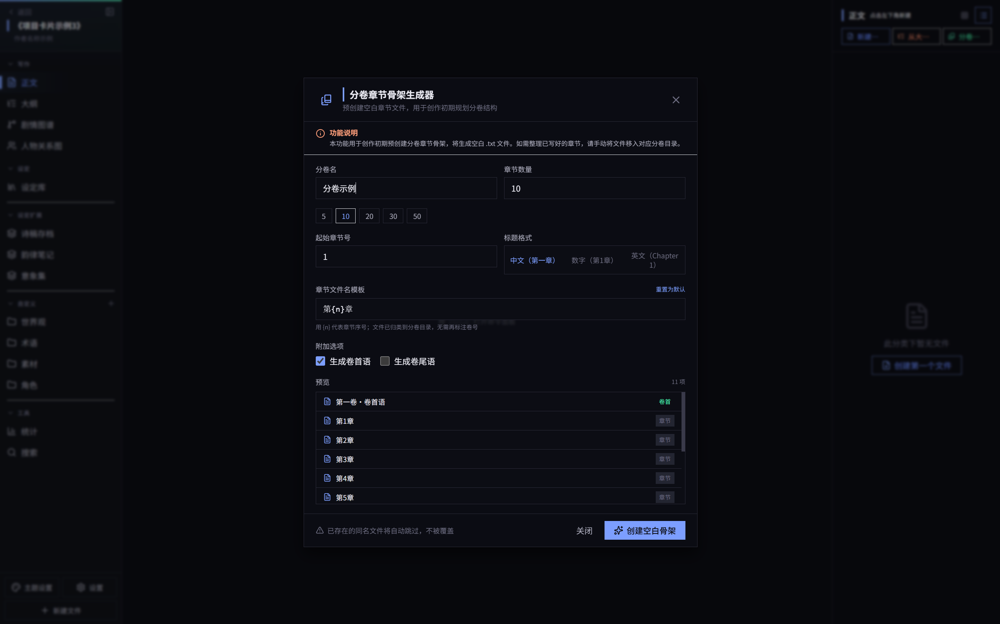
分卷功能页示例
长篇专属功能
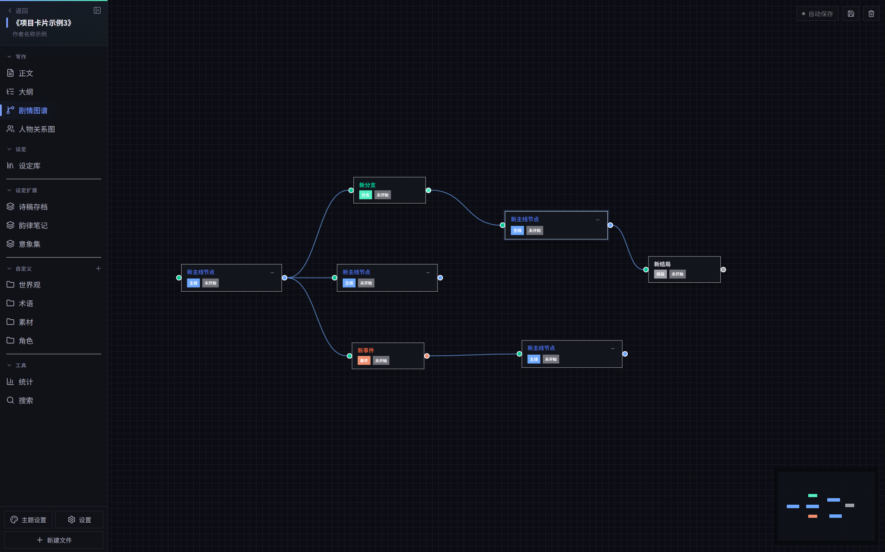
剧情图谱示例
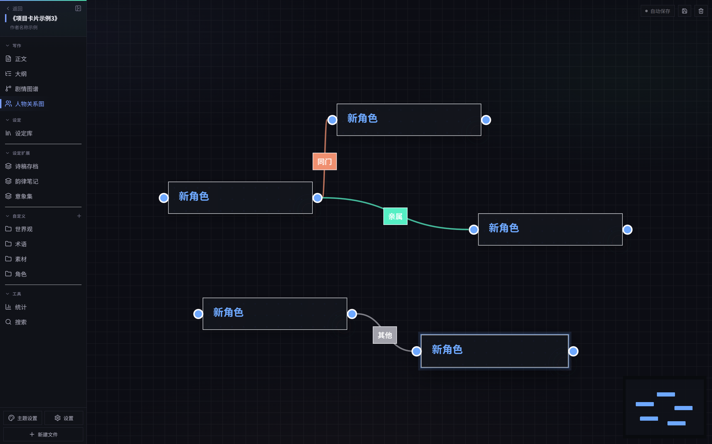
人物关系图谱功能示例
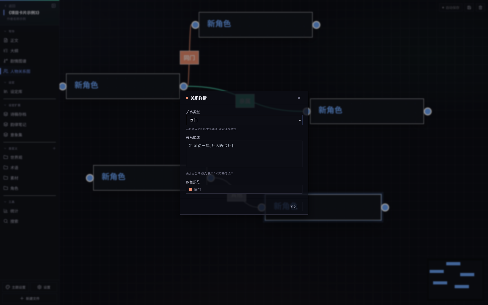
人物关系图谱关系功能示例
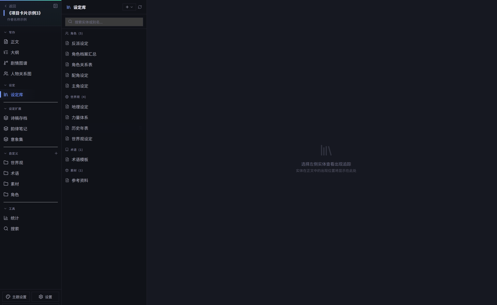
设定库功能示例
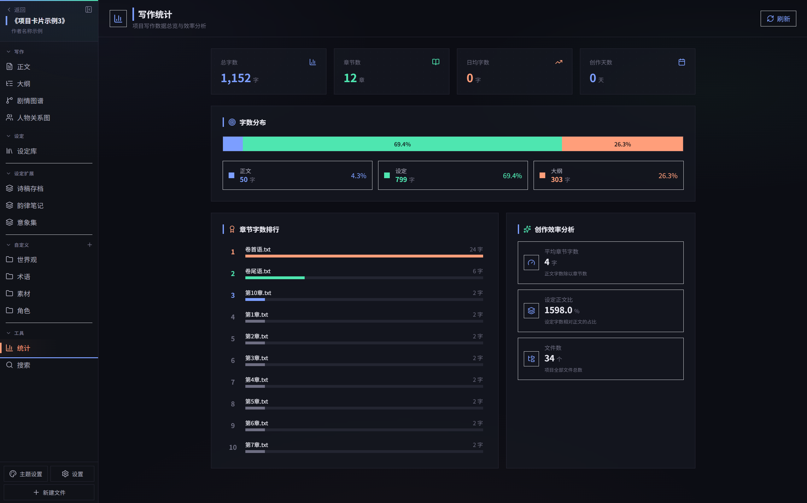
写作统计面板页面示例
个性化设置
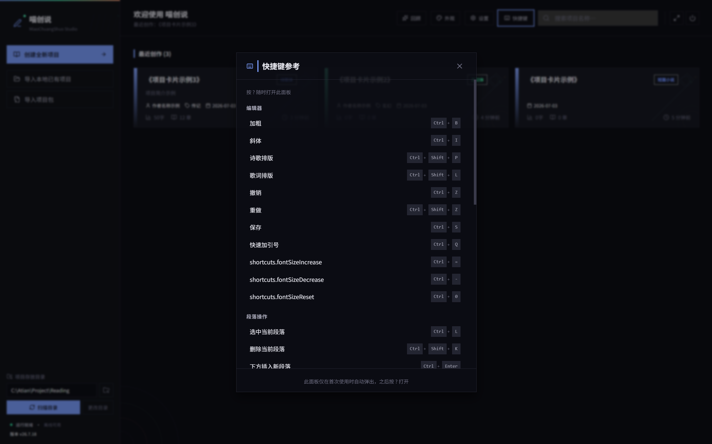
快捷键示例
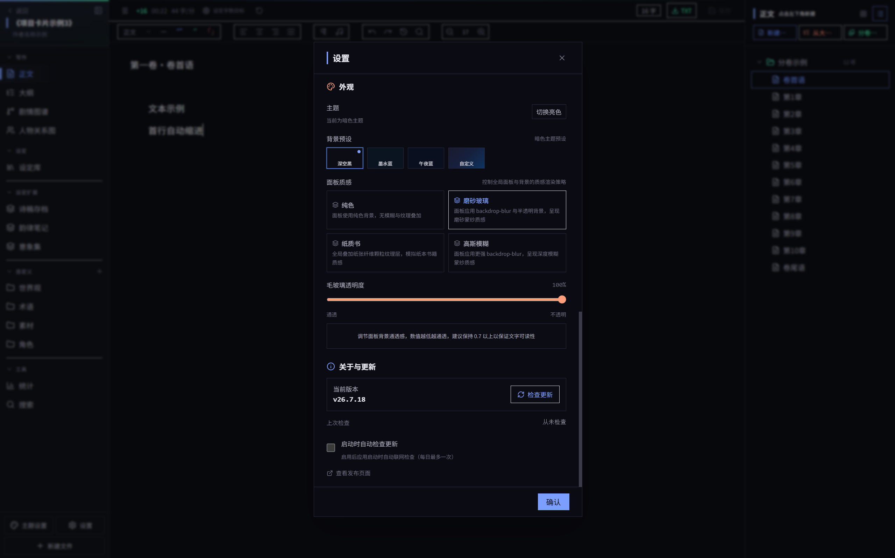
主题自定义示例
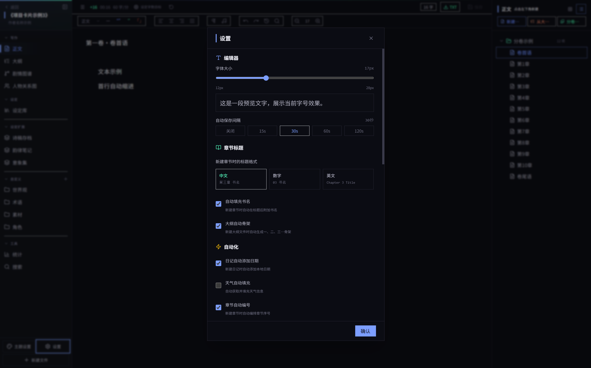
设置自定义功能菜单示例
04 · 核心功能
9 modules
富文本编辑器引擎
TipTap (ProseMirror) Document Model 数据驱动, 仅更新变更片段, 百万字保持 60fps。支持中文引号配对、首行缩进、诗歌排版、智能 Tab。
TipTap 2 · ProseMirror · IME
剧情时间线图谱
React Flow 受控模式构建可视化剧情图谱, 支持分支结构。Rust 后端 DFS 三色标记法 DAG 校验, 防止循环依赖。
React Flow · dagre · DAG
人物关系图谱
可视化构建人物关系网, 自定义关系类型与描述。分区布局算法消除孤立节点遮挡, 右键菜单支持新建节点与自动布局。
@xyflow · 分区布局
智能设定库
集中管理世界观、地点、物品、组织等设定资料。Rust 后端扫描解析设定目录, 编辑器内可通过 @ 提及快速插入引用。
设定管理 · @ 提及
时间旅行式撤销
zundo temporal 中间件包裹 Zustand store, 时间旅行式状态回溯。React Flow 拖拽 pause/resume 精确控制历史边界。
Zustand · zundo · 快照
VS Code 命令面板
Ctrl+K 唤起命令面板, 模糊搜索快速定位功能与文件。cmdk 引擎提供分组与高亮, 与 VS Code 快捷键映射对齐。
cmdk · Ctrl+K
项目快照归档
增量快照归档支持项目级版本回溯, 写崩可一键回滚。Rust 后端原子写入策略保证快照不因崩溃损坏。
增量快照 · 原子写入
题材模板生成
内置标准长篇、散文随笔、舞台剧本、西幻史诗四种题材模板, Rust 后端按题材生成不同子目录结构与引导文件。
四种题材 · 目录生成
05 · 技术架构
C/S variant desktop
前端渲染层 · Webview
React 18
响应式 UI
TipTap
富文本编辑器
React Flow
图谱引擎
Zustand
全局状态
| Tauri IPC · invoke / emit |
Rust 核心计算层
fs_commands
文件系统 IO
project_template
模板生成器
timeline_commands
DAG 校验
snapshot_commands
快照归档
word_count
字数统计
本地持久化层
TXT
章节正文
JSON
图谱数据
ZIP
快照归档
06 · 目标用户
6 personas
独立网文作者
Daily 5000+ words
日更数千字, 需管理多条剧情线。喵创说统一管理百万字项目, 时间线与人物图谱确保剧情连贯不失控。
业余小说爱好者
Weekend Creator
周末创作, 希望尝试系统化的长篇工作流。喵创说免费可用, 零门槛上手, 适合灵活的创作节奏。
长篇连载作者
Series Writer
长篇连载需长期维护人物关系与世界观一致性。喵创说让百万字作品的角色关系、地点物品始终对齐。
隐私敏感创作者
Privacy First
对未发表作品有强烈隐私需求, 希望内容完全掌握在自己手中。喵创说完全离线运行, 数据 100% 本地, 拥有完整数据主权。
断网环境创作者
Offline Writer
出差、高铁、咖啡馆等不稳定网络环境。喵创说无需联网即可使用全部功能, 网络中断也不影响创作进程。
写作学习者
Learner
学习长篇创作的新手, 需要结构化创作引导。喵创说提供四种题材模板, 内置设定目录结构与引导文件。
07 · 价值与意义
Efficiency · Social · Business
Efficiency / 效率提升
让长篇创作从分散走向集成
喵创说将编辑、剧情、人物、设定四大模块集成于单一工作站, 配合 Ctrl+K 命令面板与 VS Code 风格快捷键, 让创作者在一个界面内完成完整工作流。Rust 后端承载重型计算, 百万字保持 60fps。
Business / 商业价值
验证 Tauri 桌面应用新范式
以 Tauri 2.0 + Rust 构建轻量化桌面应用, 安装包控制在 10MB 内, 资源占用大幅减少。验证"轻前端 + 重 Rust 后端"桌面应用新范式。
社会公益附加赛题立意
喵创说坚持完全免费、完全本地化、不收集任何用户数据三大原则, 希望降低长篇创作的工具门槛, 让更多有故事的人能够拿起键盘开始创作。我们希望帮助有写作兴趣与意向的用户迈出写作第一步, 为内容创作生态贡献一份力量。让创作工具回归创作者手中, 是本项目的核心公益立意。
08 · 演进计划
Roadmap
26.7.1 - 26.7.20
核心工作站搭建已完成
完成富文本编辑器、剧情时间线、人物关系图、设定库、命令面板五大核心模块。
26.8.x
AI 辅助创作集成进行中
集成本地 AI 模型辅助续写、设定补全、剧情推演, 保持完全离线的隐私安全特性。
26.9.x
跨平台扩展规划中
基于 Tauri 跨平台能力, 扩展至 macOS 与 Linux 平台, 让更多创作者受益。
26.10.x
移动端创作同步规划中
预留 Android 端能力, 实现基于本地文件同步的移动端轻量创作, 适配碎片化场景。
未来
创作者工具链生态愿景
开放插件机制, 形成围绕长篇创作的工具链生态, 服务更广泛的创作者群体。
附 · HTML 产物说明
Self-contained
关于本 HTML 文件
本文件即 TRAE 社区报名帖必须上传的 HTML 创意产物, 由 TRAE 辅助生成。特性: 自包含单页 HTML, 无任何外部 CDN 依赖, 离线可直接双击打开浏览。风格仿照 FANDEX-web 项目前端设计语言 (暗色主题 / 1px 网格 / 紧凑工程化)。所有截图均为喵创说实际运行界面。